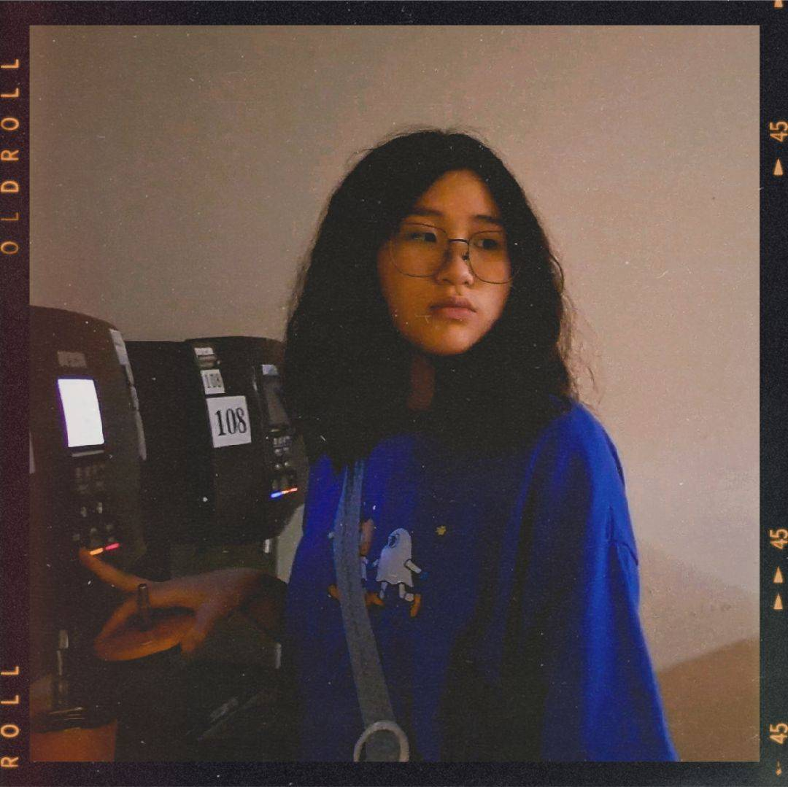
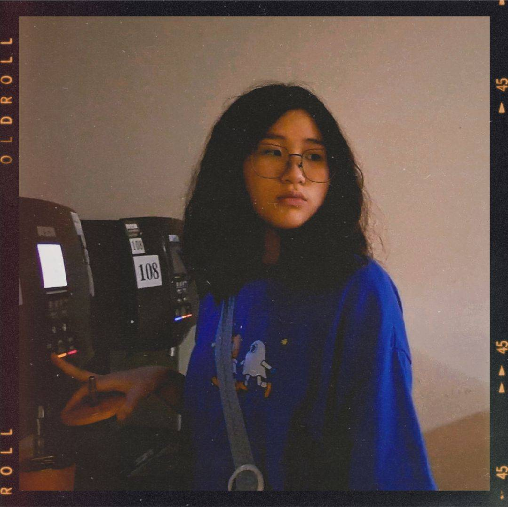

劇情簡介
高中新生海茵在學校遭到同儕的排擠與霸凌，內心愈發絕望， 幸得偶然遇見的少女阿暖默默守護與陪伴在身旁。然而，阿暖其實是一名因過往創傷無法安息的靈魂。 隨著兩人互相敞開心扉，海茵重拾勇氣，並在阿暖的幫助下，將霸凌事件公之於眾。 最終，阿暖也釋放了長久的執念，得以安然離去。多年後，成為輔導老師的海茵回到舊地， 藉相機照片緬懷阿暖，並將這段過往轉化為溫柔的力量，去幫助更多迷途的學生。
登場角色

林海茵 / 女主角
演員：劉恩伶
高一新生，性格內向善良，剛開學便交到了新朋友，卻在班上遭遇霸凌，經歷孤獨與掙扎。

宋暖 / 幽靈
演員：施亞蝶
曾是海茵的前輩，性格關心他人，因過去的悲劇而化為幽靈，努力幫助海茵度過困境，並與她建立連結。
 

陳姿齡 / 反派
演員：廖翊君
海茵的同班同學，外向且善於操控社交，因為嫉妒而成為海茵的霸凌者，企圖用言語和行動攻擊海茵。


海茵媽媽 / 配角
演員：謝芷瑀
對海茵十分關心，想讓她在新環境中適應良好，卻因工作繁忙無法陪伴女兒，情感上有些疏離。

老師 / 配角
演員：謝宏碩
海茵的班主任，對學生的情況有所關心，但面對霸凌事件時受到學校政策的限制，無法及時提供幫助。

朋友 / 配角
演員：臨時演員
海茵的同學，與姿齡交好，時常參與其對海茵的霸凌行為，有時會協助姿齡，展現出群體中的服從與從眾。